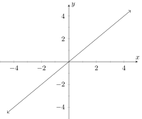
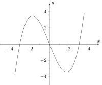

This section contains information on how exponents effect local extrema
Local extrema
_
Although we lack the analytic methods to tackle local extrema properly (Indeed, this is a major area of study in the first
calculus class, comprising about a third of the course) there is some information we can gather just from the
equation itself. Consider the following three graphs and notice what happens as we increase the degree of the leading
term;
The graph of ; 
The graph of ;
The graph of 
Each time we increase the exponent we get another ‘bend’ in the graph. But this need not always happen, after all the graph of
doesn’t have the same number of bends as the graph of above. Nonetheless, we know that a parabola will always have one bend,
and a line will never have any. Continuing this pattern we can eventually come to the following observation; the
number of bends in the graph of a polynomial will be, at most, one less than the degree of the polynomial. This is
important because each bend is also a local extrema, so a more precise (or mathematical) way to state our observation
is;
For any polynomial of degree , there are at most local extrema on the graph of .
For example, based on our lemma, if we have a fifth degree polynomial, we know that it will have at most four local extrema, even
if we don’t know anything at all about what the graph actually looks like.
1 : Consider the polynomial . What can be said about the extrema of ? (Select all that apply)
has an absolute extrema. has no absolute extrema. has at most one local extrema. has at most four local extrema. has, at most, three local extrema.
has no local extrema. has exactly one local extrema.
Remember that a polynomial has absolute extrema if it is even degree, and it has at most the degree minus 1 local extrema.
Since the polynomial is even degree (it’s largest degree term is which has degree 4) it has an absolute extrema. Moreover, since it
has degree 4, it has at most local extrema.